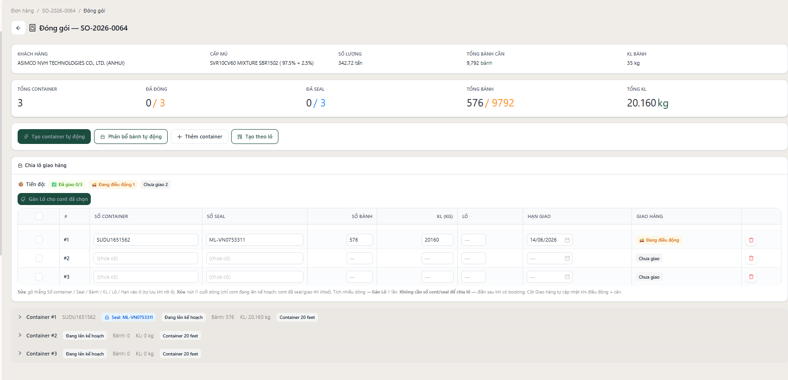
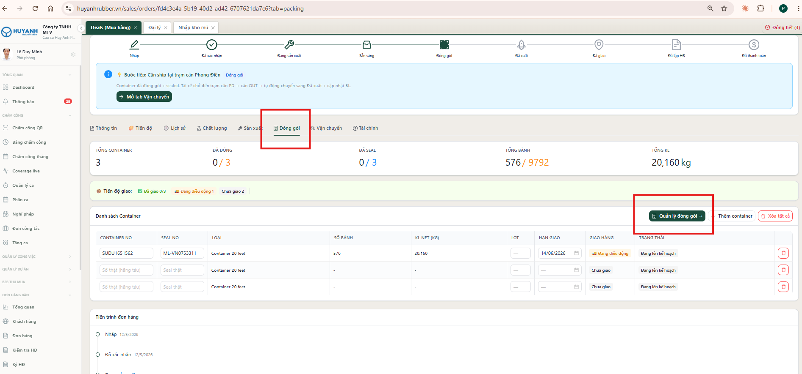
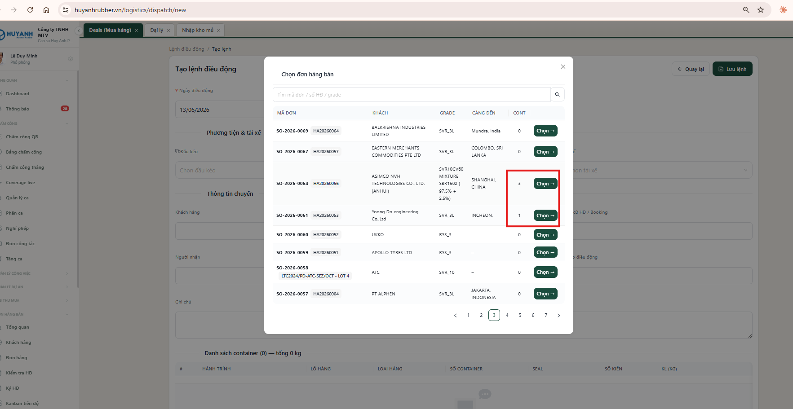
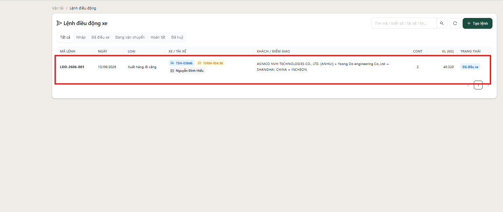
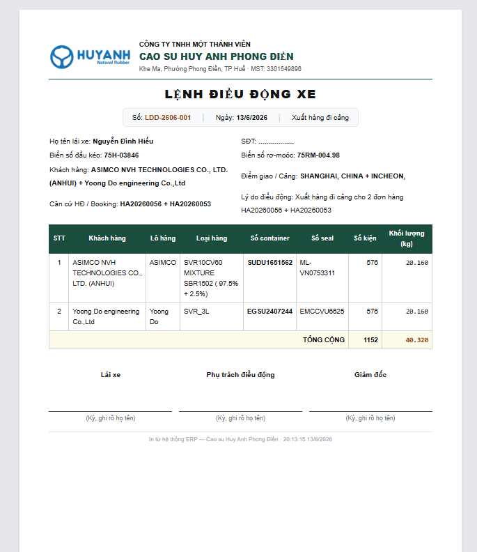
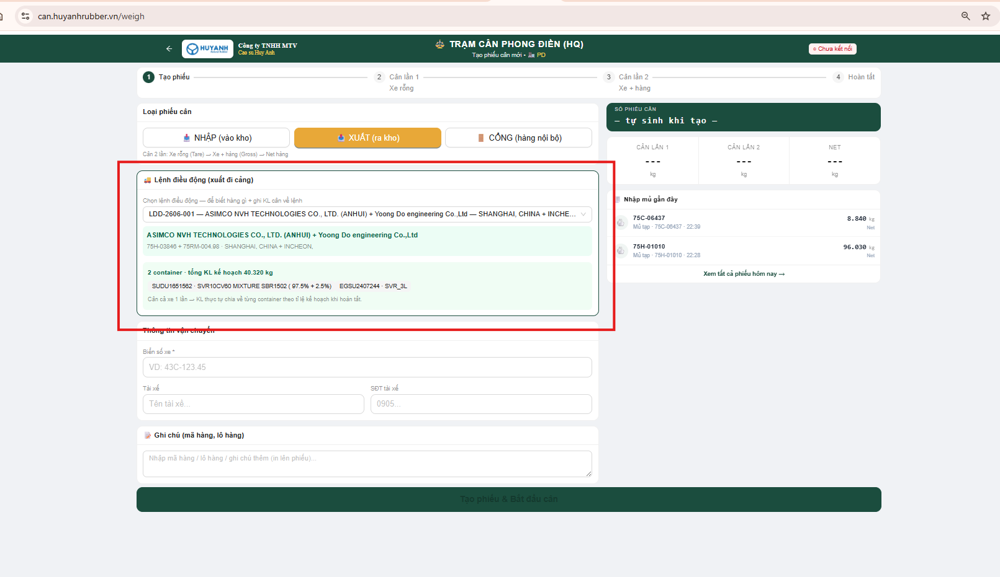
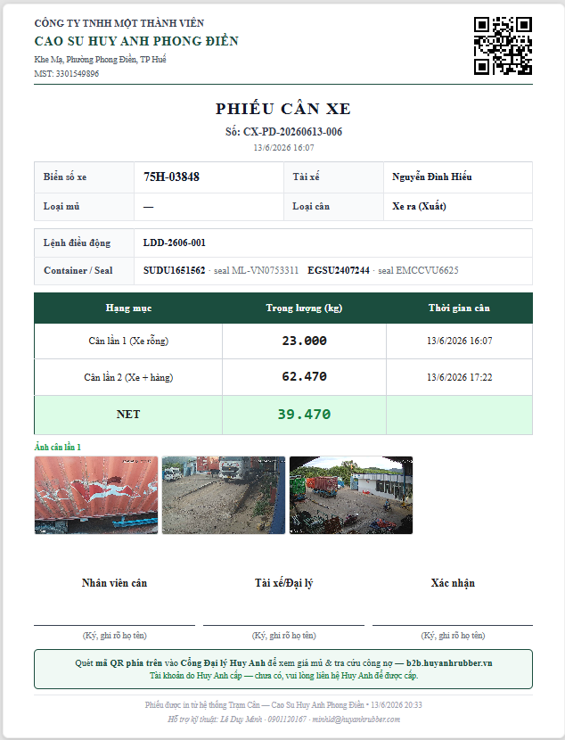
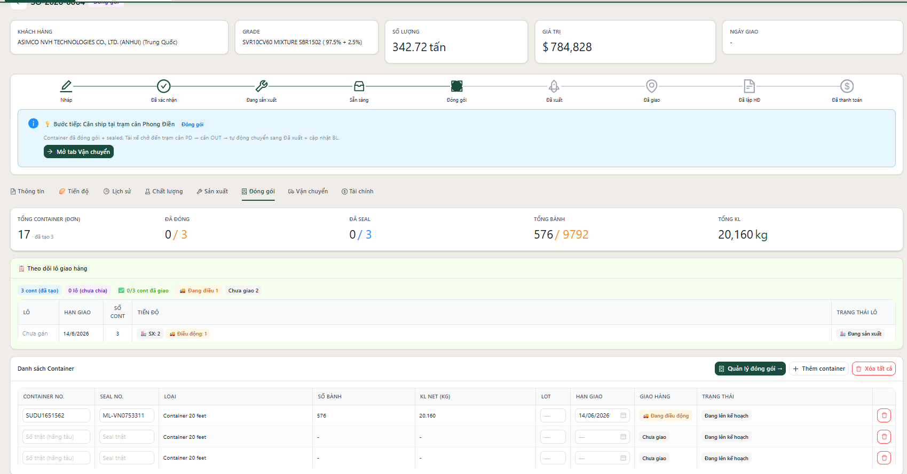

Quy trình giao hàng khép kín: Đơn hàng bán · Lệnh điều động (Vận tải) · Trạm cân
Cập nhật 13/06/2026
Chiều nay 3 module được nối thành một dây chuyền khép kín: kế hoạch giao hàng lập ở
Đơn hàng bán → điều xe ở Lệnh điều động → cân thực tế ở Trạm cân →
kết quả tự chảy ngược về Đơn hàng bán cập nhật tiến độ. Khai báo một lần, dùng cho cả
ba khâu, không nhập lại — và luôn đối chiếu được kế hoạch vs thực tế.
① Sơ đồ liên kết tổng quan
📦
ĐƠN HÀNG BÁN
Chia lô (lot) + hạn giao Khai số container / seal
▶
🚚
LỆNH ĐIỀU ĐỘNG
Chọn cont theo lô Điều xe + in chứng từ
▶
⚖️
TRẠM CÂN
Cân xuất theo lệnh KL + seal thực tế
↩ Khối lượng & seal thực tế chảy ngược về Đơn hàng bán →
tiến độ lô tự đổi sang ✅ đã giao
Vì sao nối liền nhau lại quan trọng?
Nhập 1 lần dùng 3 nơi: số container / seal nhập ở Đơn hàng bán tự sang Lệnh điều động và phiếu cân — không gõ lại, không sai lệch.
So được kế hoạch với thực tế: khối lượng dự kiến (ở đơn) và khối lượng cân thật (ở trạm cân) hiện cùng chỗ.
Thấy tiến độ ngay: lô nào đã giao / đang đi / chưa đi — cập nhật ngay sau khi cân.
👥 Ai làm việc gì?
Bộ phận
Làm gì trong quy trình này
📦 Xuất nhập khẩu (Logistics)
Chia lô giao hàng · nhập số container + số seal (lấy từ booking hãng tàu) · theo dõi tiến độ từng lô
🚚 Vận tải (đội xe)
Lập lệnh điều động · chọn container theo lô · điều xe · in chứng từ vận chuyển
⚖️ Trạm cân (Phong Điền)
Cân xuất theo lệnh điều động → ghi khối lượng & seal thực tế
✍️ Số container / seal chỉ NHẬP 1 LẦN — tránh sai sót nhập liệu
Logistics nhập số container + số seal một lần duy nhất ở Đơn hàng bán.
Số này tự chảy sang Lệnh điều động và Phiếu cân — không ai phải gõ lại ở 3 nơi.
Tránh mỗi nơi gõ một kiểu, sai 1 ký tự, lệch số seal giữa các chứng từ.
Người điều xe & người cân chỉ chọn lại, không nhập lại → ít thao tác, ít lỗi.
Số trên phiếu cân, lệnh điều động, biên bản bàn giao luôn khớp nhau vì cùng một nguồn.
② Đơn hàng bán — Chia lô & nhập số container (việc của Logistics)
1 đơn xuất khẩu thường nhiều container, giao làm nhiều đợt (lô). Bộ phận Xuất nhập khẩu (Logistics)
chia lô rõ ràng ngay trên hệ thống, thay vì ghi chú tay.
Làm được gì
Mỗi container đặt số Lô + Hạn giao ngay trong khu "Chia lô giao hàng". Đặt hạn 1 container → tự áp cho cả lô.
Chia lô khi CHƯA có số container/seal — chia lô là việc lập kế hoạch, làm trước; số container/seal điền sau khi có booking hãng tàu.
Tạo theo lô: khai Lô 1: 5 cont – hạn 20/06, Lô 2: 5 cont – hạn 30/06 → hệ thống tạo sẵn các container trống đã gắn lô + hạn.
Gán lô nhiều container cùng lúc: tích nhiều dòng → 1 nút gán cùng lô; vẫn sửa tay từng dòng.
Sửa số container / seal / số bành / khối lượng / lô / hạn tại chỗ + xóa từng container (container đã niêm phong/giao thì khoá), và lưu lại lịch sử chỉnh sửa.
Khu "Tiến độ giao": tổng đã giao / đang điều xe / chưa đi + từng lô (vd Lô 1: 5/5 · hạn 20/06).
ẢNH 1

Trang "Quản lý đóng gói" + khu Chia lô giao hàng
Bảng sửa Số container / Seal / Bành / KL / Lô / Hạn giao tại chỗ + dải Tiến độ giao theo lô (đã giao / đang điều động / chưa giao).
Cách làm — chia lô ở đâu?
Vào đơn hàng → bấm nút xanh Quản lý đóng gói → → khu "📦 Chia lô giao hàng"
(hoặc tab Đóng gói trong trang đơn → cột Lot ở bảng container). Cả 2 chỗ đều chia lô được.
ẢNH 1b

Đường vào: tab "Đóng gói" trong đơn → nút "Quản lý đóng gói →"
Mở khu Chia lô giao hàng (Ảnh 1) để gán lô + điền số cont/seal.
Nếu chưa có container, bấm Tạo container tự động (theo số kiện) hoặc + Thêm container.
Nhập Số container + Số seal thật (từ booking hãng tàu).
Tại khu Chia lô giao hàng, gõ số Lô cho từng cont theo kế hoạch (vd 5 cont đầu = Lô 1, 5 cont sau = Lô 2).
Đặt Hạn giao cho 1 cont của lô → hệ thống tự điền hạn cho cả lô đó.
Xem dải Tiến độ (đã giao / đang điều động / chưa giao + từng lô) để biết lô nào chưa đi, sắp tới hạn.
Lưu ý: chia lô do bộ phận Logistics (Xuất nhập khẩu) chủ động làm — hệ thống không tự chia. Container chưa đặt lô sẽ nằm nhóm "Chưa gán lô".
③ Lệnh điều động — Điều xe theo lô
Thay cho làm tay trên Word/giấy, hệ thống tạo "Lệnh điều động xe" + "Biên bản bàn giao vận chuyển" — lấy sẵn số container/seal từ Đơn hàng bán, không gõ lại.
Làm được gì
Chọn đầu kéo → tài xế tự điền; chọn rơ-moóc (đổi theo chuyến) — danh mục đội xe có sẵn.
Tạo từ Đơn hàng bán: chọn đơn → tích đúng container đi hôm nay (theo số cont/seal/lô), không đổ hết.
Chọn nhanh cả lô: bấm nút Lô 2 · 5/5 tích cả lô 1 cú — vẫn chỉnh tay từng cont được.
1 xe chở nhiều đơn: gắn nhiều đơn vào 1 lệnh, mỗi đơn 1 thẻ SO-2026-0064 — ASIMCO · 5 cont ✕ bấm ✕ để gỡ.
2 khách khác nhau: phần đầu phiếu tự gộp khách + cảng; bản in thêm cột "Khách hàng" cho từng container.
Chống điều trùng: container đã đi lệnh khác (hoặc đã giao) tự ẩn, không chọn lại được.
In Lệnh điều động + Biên bản bàn giao khổ A4 — khỏi gõ Word tay.
ẢNH 2

Bảng chọn đơn hàng bán (bước 1)
Chọn đơn (kèm số container có sẵn) → bước 2 tích đúng container đi hôm nay (theo lô).ẢNH 3

1 xe chở hàng của 2 khách khác nhau
Lệnh LDD-2606-001: ASIMCO + Yoong Do → SHANGHAI + INCHEON · 2 cont · gộp trong 1 lệnh.
Cách làm
Vào Vận tải → Lệnh điều động → Tạo lệnh.
Chọn đầu kéo (tài xế tự điền) + rơ-moóc cho chuyến.
Bấm Tạo từ Đơn hàng bán → chọn đơn → Chọn →.
Bấm nút Lot cần đi (vd Lot 2) để tích cả lô, hoặc tích tay từng container → Thêm … container.
(Tuỳ chọn) bấm ＋ Thêm đơn khác nếu xe chở thêm container của đơn/khách khác.
Lưu lệnh (mã LDD-…) → vào chi tiết In Lệnh điều động / In Biên bản bàn giao.
ẢNH 5

Bản in "Lệnh điều động xe" — xe chở 2 khách
Phần đầu phiếu gộp Khách hàng + Cảng + Căn cứ HĐ của cả 2 đơn; bảng có cột Khách hàng cho từng container (chỉ hiện khi ≥2 khách).
④ Trạm cân — Cân xuất theo lệnh
Khi xe ra trạm cân xuất hàng, người cân chỉ cần chọn lệnh điều động — mọi container + seal của lệnh tự hiện ra, khỏi nhập lại.
Làm được gì
Phiếu cân XUẤT có ô "🚚 Lệnh điều động" → chọn lệnh → tự hiện toàn bộ container của xe (không gõ lại số cont/seal).
1 lệnh = 1 xe = cân 1 lần cho cả xe: khối lượng tự chia theo tỉ lệ kế hoạch cho từng container (tổng khớp đúng).
Seal thực tế ghi về từng container; phiếu cân gắn vào lệnh để tra ngược khi cần.
Phiếu cân XUẤT in kèm "Thông tin xuất hàng": Lệnh điều động + Container/Seal — nhìn phiếu là biết xe chở hàng nào.
Sau khi cân: lệnh điều động có khối lượng thực, và tiến độ lô ở Đơn hàng bán tự chuyển "đã giao".
ẢNH 4

App Trạm cân — phiếu cân XUẤT
Ô "🚚 Lệnh điều động" đã chọn 1 lệnh, hiển thị tóm tắt các container của xe.
Cách làm
Tạo phiếu cân XUẤT tại trạm cân (Phong Điền) như thường lệ.
Ở ô 🚚 Lệnh điều động, chọn đúng lệnh của xe đang cân → container tự hiện ra.
Cân lần 1 (xe + hàng) và lần 2 (xe rỗng) như quy trình.
Lưu phiếu → khối lượng tự chia cho các container, seal & khối lượng thực ghi về lệnh.
Quay lại Đơn hàng bán → khu Tiến độ giao của lô đó chuyển ✅ đã giao.
ẢNH 7

Phiếu cân XUẤT in ra (A4, gọn 1 trang)
Khối "Thông tin xuất hàng" — Lệnh điều động + Container/Seal — nằm ngay dưới ô biển số/tài xế.
⑤ Theo dõi từng lô — lô nào đã giao, đang giao, đang sản xuất
1 đơn 17 container chia 2 lô đi 2 đợt (vd Lô 1 trước 20/06, Lô 2 trước 30/06) — làm sao biết
lô nào tới đâu? Ngay tab Đóng gói của đơn (và trang Quản lý đóng gói) có bảng "📋 Theo dõi lô":
gom container theo lô, tự xếp mỗi cont vào 1 trong 5 giai đoạn, rồi kết luận trạng thái cả lô.
Hệ thống tự tính — không ai phải cập nhật thủ công.
Dòng tóm tắt phía trên bảng trả lời ngay 3 câu: đơn này mấy container · mấy lô · đã giao mấy lô (mấy cont) —
vd 17 cont (đơn)2 lô🟢 Đã giao 1/2 lô✅ 5/17 cont đã giao.
ẢNH 8

Khu "📋 Theo dõi lô giao hàng" (đầu tab Đóng gói)
Dòng tóm tắt (cont · lô · đã giao mấy lô) + bảng mỗi lô 1 dòng: hạn giao · số cont · tiến độ từng giai đoạn · trạng thái lô.
5 giai đoạn của mỗi container
Giai đoạn
Khi nào
🏭 Đang sản xuất
Container chưa có bành gán vào (đang gom hàng / sản xuất)
📦 Đang đóng gói
Đã có bành gán vào / đang đóng
✅ Sẵn sàng giao
Container đã seal (đóng xong, chờ điều xe)
🚚 Đang điều động
Đã vào lệnh điều động, chưa cân xuất
🟢 Đã giao
Đã cân xuất (có KL thực tế)
Trạng thái cả lô = mắt xích yếu nhất
Lô còn 1 cont đang sản xuất → cả lô tính là "🏭 Đang sản xuất" (chưa sẵn sàng đi).
Tất cả cont của lô đã cân xuất → "🟢 Đã giao xong".
Cột Tiến độ vẫn hiện chi tiết: mỗi giai đoạn có bao nhiêu cont (vd 🟢 Đã giao: 2 · 🚚 Điều động: 1 · 🏭 SX: 2).
🚦 Đơn hàng tự chuyển "Đã giao" khi TẤT CẢ lô đã giao
Mỗi lô "đã giao" khi mọi container của lô đã cân xuất.
Khi tất cả container (mọi lô) của đơn đã cân xuất → trạng thái đơn tự chuyển Đã giao — không cần ai bấm tay.
Hệ thống tự cập nhật ngay khi cân xong, dù không ai mở đơn lên xem.
Xem ở đâu: Đơn hàng → tab Đóng gói → khu "📋 Theo dõi lô giao hàng" (đầu tab). Cũng có trong trang Quản lý đóng gói →.
⑥ Tác dụng nổi bật
Nhập số container/seal 1 lần — tránh sai sót: khai ở đơn (Logistics), tự chảy sang lệnh & phiếu cân, không gõ lại nên không lệch số.
Giao nhiều đợt rõ ràng — chia lô + hạn giao, điều xe theo lô bằng 1 nút.
So kế hoạch với thực tế — khối lượng dự kiến vs khối lượng cân; seal dự kiến vs seal thực.
1 xe chở nhiều đơn / nhiều khách vẫn quản lý & in chứng từ đúng từng khách.
Chứng từ in tự động — Lệnh điều động + Biên bản bàn giao khổ A4, bỏ thao tác gõ Word tay.
Minh bạch & an toàn — không điều trùng 1 container 2 lần; mọi chỉnh sửa số cont/seal đều lưu lịch sử.
Nền cho báo cáo trạm cân — biết "hàng gì, của ai, đi cảng nào" vì phiếu cân gắn lệnh.
Hệ thống ERP — Cao su Huy Anh Phong Điền · Tài liệu nội bộ · 13/06/2026